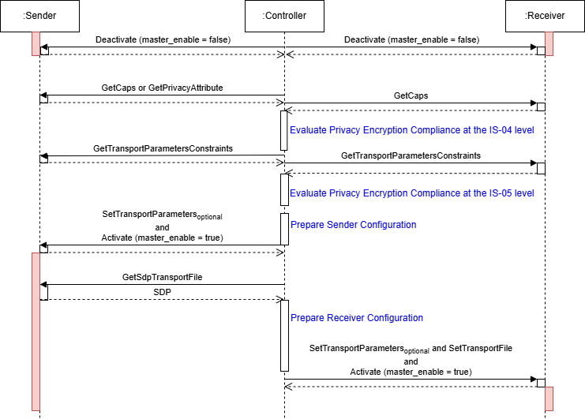
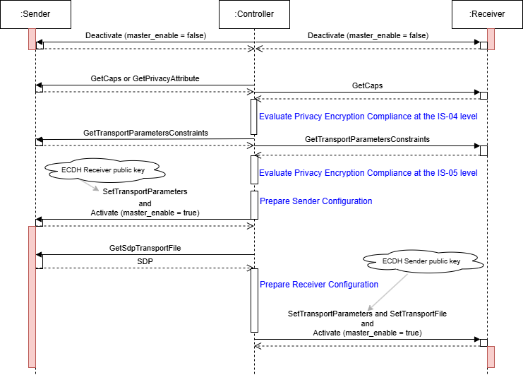

AMWA BCP-005-03: NMOS Support for IPMX/PEP
(c) AMWA 2025, CC Attribution-NoDerivatives 4.0 International (CC BY-ND 4.0)
Introduction
The Privacy Encryption Protocol (PEP) is defined by the VSF technical recommendation TR-10-13. It specifies a method for generating cryptographic keys used in the encryption, decryption, and authentication of media content transmitted over multicast and unicast networks. PEP is designed to support multiple transport protocol adaptations. The default adaptation, defined in the TR-10-13 technical recommendation, addresses privacy encryption of media streams using the RTP streaming protocol. Additionally, the VSF technical recommendation TR-10-14 defines an adaptation for the USB-IP streaming protocol.
This document focuses on the application of PEP within an NMOS environment. Detailed information about PEP itself is provided in the TR-10-13 technical recommendation.
While the Privacy Encryption Protocol (PEP) is primarily specified for IPMX streaming environments, it may also be utilized in non-IPMX contexts by devices implementing the TR-10-14 technical recommendation alongside compatible transport protocol adaptations.
Use of Normative Language
The key words "MUST", "MUST NOT", "REQUIRED", "SHALL", "SHALL NOT", "SHOULD", "SHOULD NOT", "RECOMMENDED", "MAY", and "OPTIONAL" in this document are to be interpreted as described in RFC 2119.
Definitions
The NMOS terms 'Controller', 'Node', 'Source', 'Flow', 'Sender', 'Receiver' are used as defined in the NMOS Glossary.
The term 'PSK' refers to a Pre-Shared Key that serves as the root secret for the derivation of encryption and authentication keys in the privacy encryption process.
The term 'PEP' refers to the Privacy Encryption Protocol, defined in the TR-10-13 technical recommendation for IPMX.
The term 'ECDH' refers to the Elliptic Curve Diffie-Hellman key agreement algorithm.
Compliance
A Node MUST comply with all strict requirements introduced by shall clauses in TR-10-13. Some of these requirements are restated in this specification to emphasize their importance, without altering their original normative scope. This specification can define additional values for the protocol, mode, and ecdh_curve parameters beyond those specified in TR-10-13, TR-10-14, or other VSF/IPMX technical recommendations. The inclusion of these additional values does not violate any shall clause in the referenced technical recommendations.
A Node MUST comply with the non-strict requirements introduced by should and may clauses in TR-10-13, where such requirements are explicitly elevated to strict requirements through a MUST clause in this specification.
A Node MUST comply with new requirements introduced by this specification that are not present in TR-10-13.
General Provisions
A Node that is capable of transmitting privacy-encrypted streams using the Privacy Encryption Protocol MUST expose Source, Flow, and Sender resources in the IS-04 Node API.
A Node that is capable of receiving privacy-encrypted streams using the Privacy Encryption Protocol MUST expose Receiver resources in the IS-04 Node API.
A Node compliant with this specification MUST implement IS-04 v1.3 or higher and IS-05 v1.1 or higher.
PSK Provisioning
As indicated in TR-10-13, the provisioning of PSK(s) in devices supporting the Privacy Encryption Protocol (PEP) is under the control of the device manufacturer.
Refer to the "Key Distribution" section of TR-10-13 for more details about the key distribution and provisioning processes.
The provisioning of PSKs is intentionally under manufacturer control, providing flexibility in implementation methods to support diverse deployment environments and security requirements.
Identification
A PSK has a value and a size (128, 256, or 512 bits). Each PSK is identified by a unique key_id. This uniqueness ensures unambiguous identification of each PSK in use, reducing security risks associated with key duplication. The provisioning process ensures that, for a given key_id, all devices under a common administrative authority receive the same PSK value and size.
Note: The TR-10-13 technical recommendation includes explicit requirements regarding the identification of the PSK size in the vendor-specific PSK provisioning API.
Association
Each Sender using privacy encryption MUST be associated with a provisioned PSK via its key_id. Each Receiver using privacy encryption MUST be associated with a set of provisioned PSKs, identified by their key_id values.
A Sender MUST populate the ext_privacy_key_id extended transport parameter in the IS-05 active, staged and constraints endpoints with the key_id of its associated PSK. A Sender MUST only expose the IS-05 extended transport parameters of the Privacy Encryption Protocol when it is associated with a provisioned PSK.
A Receiver MUST populate the ext_privacy_key_id extended transport parameter in the IS-05 constraints endpoint with all acceptable key_id values. At activation time, a Receiver using privacy encryption becomes associated with one of the provisioned PSKs through the ext_privacy_key_id extended transport parameter. A Receiver MUST fail activation if the provided key_id is not provisioned in the device or is not listed in the Receiver's ext_privacy_key_id transport parameter constraints. A Receiver MUST only expose the IS-05 extended transport parameters of the Privacy Encryption Protocol when it is associated with at least one provisioned PSK.
Enabling/Disabling Privacy Encryption
As indicated in TR-10-13, the enabling and disabling of privacy encryption in devices supporting the PEP technology is under the control of the device manufacturer.
Devices MUST NOT allow changes to the state (enabled or disabled) of privacy encryption through the IS-05 and IS-11 NMOS APIs.
Refer to the "SDP Transport File Parameters / NMOS Transport Parameters" section of TR-10-13 for further details on how privacy encryption is enabled or disabled.
The enabling and disabling of privacy encryption is intentionally under manufacturer control, providing flexibility in implementation methods to support diverse deployment environments and security requirements.
Note: The security postulate for a Sender is that privacy-encrypted content remains protected and is never transmitted in clear by any Sender within a device. For a Receiver, the postulate is that content can be trustworthy only when received with privacy encryption, requiring that privacy-encrypted content is never composited, mixed, or multiplexed with content received in clear by other Receivers.
Note: Privacy encryption is not a content protection mechanism, and providing access to a low-quality stream violates the privacy objective.
Parameters
The TR-10-13 technical recommendation defines the following parameters, which are accessible as IS-05 extended transport parameters (including constraints), and as privacy attribute parameters in SDP transport files, with the exception of ECDH parameters which are not present in the SDP file.
For transport protocols using an SDP transport file: a Sender MUST communicate privacy encryption parameters in the SDP transport file associated with a privacy-encrypted stream, and MUST also communicate these parameters using the extended NMOS transport parameters.
For transport protocols that do not use an SDP transport file: a Sender or Receiver MUST communicate the privacy encryption parameters using the extended NMOS transport parameters.
| Transport Parameter Name | Type | SDP Name | Sender | Receiver |
|---|---|---|---|---|
| ext_privacy_protocol | string | protocol | r/w | r/w |
| ext_privacy_mode | string | mode | r/w | r/w |
| ext_privacy_iv | string | iv | read-only | r/w |
| ext_privacy_key_generator | string | key_generator | read-only | r/w |
| ext_privacy_key_version | string | key_version | read-only | r/w |
| ext_privacy_key_id | string | key_id | read-only | r/w |
| ext_privacy_ecdh_sender_public_key | string | - | read-only | r/w |
| ext_privacy_ecdh_receiver_public_key | string | - | r/w | read-only |
| ext_privacy_ecdh_curve | string | - | r/w | r/w |
IS-05 Transport Parameters
A Sender/Receiver implementing TR-10-13 MUST provide the following extended transport parameters in the IS-05 active, staged and constraints endpoints:
- ext_privacy_protocol
- ext_privacy_mode
- ext_privacy_iv
- ext_privacy_key_generator
- ext_privacy_key_version
- ext_privacy_key_id
A Sender/Receiver implementing TR-10-13 and supporting ECDH modes MUST also provide the following extended transport parameters in the IS-05 active, staged, and constraints endpoints:
- ext_privacy_ecdh_sender_public_key
- ext_privacy_ecdh_receiver_public_key
- ext_privacy_ecdh_curve
The ext_privacy_* transport parameters MAY be used with any transport supporting privacy encryption and having a protocol adaptation specified in TR-10-13, TR-10-14, other VSF/IPMX technical recommendations, or this specification.
IS-05 Transport Parameters Constraints
Each ext_privacy_* transport parameter MUST have an associated constraint that either indicates that the parameter is unconstrained, allowing any valid value, or that it is constrained to a specific set of values. A parameter identified as read-only in the parameter definitions table MUST always be constrained to a single value. A Sender/Receiver MUST fail activation if any IS-05 ext_privacy_* transport parameter violates its defined constraints.
The constraints endpoint of the parameters ext_privacy_protocol and ext_privacy_mode on both Senders and Receivers MUST enumerate all supported protocols and modes. These parameters MUST NOT be unconstrained, and their constraints MUST NOT change when the master_enable attribute of a Sender/Receiver active endpoint is true.
The constraints endpoint of the parameter ext_privacy_ecdh_curve on both Senders and Receivers MUST enumerate all supported curves. This parameter MUST NOT be unconstrained, and its constraints MUST NOT change when the master_enable attribute of a Sender/Receiver active endpoint is true.
Note: The constraints on the parameters
ext_privacy_protocol,ext_privacy_mode, andext_privacy_ecdh_curveare expected to remain the same unless the device's Privacy Encryption Protocol support is reconfigured by a User through a vendor-specific mechanism.
Protocol
The protocol parameter MUST be one of the following:
- "RTP"
- "RTP_KV"
- "USB"
- "USB_KV"
- "NULL"
If privacy encryption is disabled or not supported by a Sender/Receiver, and the ext_privacy_* transport parameters are present, the "NULL" protocol MUST be used for the ext_privacy_protocol transport parameter in the active and staged endpoints to indicate that privacy encryption is not available or is disabled. The associated constraints MUST allow only the "NULL" protocol when the ext_privacy_protocol parameter is "NULL".
Note: The string "NULL" is not equivalent to the JSON null value.
The "RTP" protocol MUST be supported by all devices implementing TR-10-13 for the urn:x-nmos:transport:rtp, urn:x-nmos:transport:rtp.mcast, and urn:x-nmos:transport:rtp.ucast transports.
The "RTP_KV" protocol MAY be supported by devices supporting the "RTP" protocol.
The "USB_KV" protocol MUST be supported by all devices implementing TR-10-13 and TR-10-14 for the urn:x-nmos:transport:usb transport.
The "USB" protocol MAY be supported by devices supporting the "USB_KV" protocol.
Mode
If privacy encryption is disabled or not supported by a Sender/Receiver, and the ext_privacy_* transport parameters are present, the "NULL" mode MUST be used for the ext_privacy_mode transport parameter in the active and staged endpoints to indicate that privacy encryption is not available or is disabled. The associated constraints MUST allow only the "NULL" mode when the ext_privacy_mode parameter is "NULL".
Note: The string "NULL" is not equivalent to the JSON null value.
For protocols "RTP" and "RTP_KV"
The mode parameter MUST be one of the following:
- "AES-128-CTR"
- "AES-256-CTR"
- "AES-128-CTR_CMAC-64"
- "AES-256-CTR_CMAC-64"
- "AES-128-CTR_CMAC-64-AAD"
- "AES-256-CTR_CMAC-64-AAD"
- "ECDH_AES-128-CTR"
- "ECDH_AES-256-CTR"
- "ECDH_AES-128-CTR_CMAC-64"
- "ECDH_AES-256-CTR_CMAC-64"
- "ECDH_AES-128-CTR_CMAC-64-AAD"
- "ECDH_AES-256-CTR_CMAC-64-AAD".
The "AES-128-CTR" mode MUST be supported by all devices implementing the "RTP" or "RTP_KV" protocols.
A Sender configured with a 256-bit or 512-bit PSK MUST support only modes based on AES-256. A Sender configured with a 128-bit PSK MAY support modes based on AES-128, AES-256, or both.
Note: If the constraints on the IS-05
ext_privacy_modetransport parameter of a Sender only allow modes based on AES-128, it indicates that only 128-bit PSKs are used.Note: The "AES-128-CTR"
modeand a PSK of 128-bit are supported by all devices implementing the "RTP" or "RTP_KV" protocols. If a Sender is associated with a 256-bit PSK, then the "AES-128-CTR"modewill not be available for that Sender unless the associated PSK size becomes 128 bit.
A Receiver configured with a 256-bit or 512-bit PSK MUST support modes based on AES-256. A Receiver configured with a 128-bit PSK MUST support modes based on AES-128. A Receiver MAY support both AES-128 and AES-256-based modes simultaneously. A Receiver MUST fail activation if a key_id associated with a 256-bit or 512-bit PSK is used with a mode that is not based on AES-256.
Note: If the constraints on the IS-05
ext_privacy_modetransport parameter of a Receiver only allow modes based on AES-128, it indicates that only 128-bit PSKs are allowed.
The PEP "urn:ietf:params:rtp-hdrext:PEP-Full-IV-Counter" and "urn:ietf:params:rtp-hdrext:PEP-Short-IV-Counter" RTP Extension Headers MUST be declared in the SDP transport file. The declaration MUST be performed as per RFC-8285, using the "sendonly" direction.
For protocol "USB" and "USB_KV"
The mode parameter MUST be one of the following:
- "AES-128-CTR_CMAC-64-AAD"
- "AES-256-CTR_CMAC-64-AAD"
- "ECDH_AES-128-CTR_CMAC-64-AAD"
- "ECDH_AES-256-CTR_CMAC-64-AAD"
The "AES-128-CTR_CMAC-64-AAD" mode MUST be supported by all devices implementing the "USB" or "USB_KV" protocols.
Elliptic Curve Diffie-Hellman (ECDH)
The ECDH mode allows Perfect Forward Secrecy.
The ecdh_curve parameter MUST be one of the following:
- "secp256r1"
- "secp521r1"
- "25519"
- "448"
- "NULL"
If the ECDH modes are not supported by a Sender/Receiver and the ext_privacy_* transport parameters are present, the "NULL" curve MUST be used for the ext_privacy_ecdh_curve transport parameter in the active and staged endpoints to indicate that ECDH modes are not available. The associated constraints MUST allow only the "NULL" curve when the ext_privacy_ecdh_curve parameter is "NULL".
The "secp256r1" ecdh_curve MUST be supported by all devices that implement ECDH modes.
The ECDH functionality is available exclusively through the IS-05 extended transport parameters. There are no ECDH-related parameters defined in the privacy attribute of an SDP transport file. ECDH modes of operation are optional, and support for these ECDH-based modes is not required for conformance with TR-10-13, TR-10-14, or other VSF/IPMX technical recommendations.
Note: A Sender/Receiver generates a new public key whenever it explicitly or implicitly becomes inactive.
IS-04, IS-05, IS-11 Senders
A Sender compliant with this specification MUST provide a privacy Sender attribute to indicate that privacy encryption and the PEP protocol are used by the Sender. This attribute MUST be true if a privacy attribute is present in the Sender's SDP transport file, and MUST be false if no privacy attributes are present. If an SDP transport file is not currently available because the Sender is inactive, the privacy attribute indicates whether such a file would contain a privacy attribute if the Sender were active. If the Sender's transport protocol does not use an SDP transport file, the attribute indicates whether privacy encryption and the PEP protocol are used by the Sender.
A Sender implementing privacy encryption and the PEP protocol MUST provide IS-05 ext_privacy_* extended transport parameters and associated constraints that specify the extent of support for the features defined in TR-10-13.
If the Sender's privacy attribute is false, the ext_privacy_protocol and ext_privacy_mode transport parameters MUST be "NULL".
If the Sender's privacy attribute is true, the ext_privacy_protocol and ext_privacy_mode transport parameters MUST NOT be "NULL".
Note: A Sender not providing the
privacyattribute is either not supporting privacy encryption and the PEP protocol, or declaring itself as not implementing this specification.
A Sender MAY provide a urn:x-nmos:cap:transport:privacy capability to indicate that privacy encryption and the PEP protocol are supported. A Sender MAY support either the true or false value.
Note: A Sender is not allowed by TR-10-13 to support both values. The TR-10-13 specification explicitly states that "Only a vendor-specific configuration mechanism shall be able to configure a Sender/Receiver to disable privacy encryption.".
A Controller MAY use a Sender's urn:x-nmos:cap:transport:privacy capability and IS-05 ext_privacy_* transport parameters constraints to verify Receivers compatibility with a Sender. If necessary, it MAY adjust transport parameters of the Sender (within its declared constraints) to make it compatible with the Receivers.
A Sender MUST NOT list the urn:x-nmos:cap:transport:privacy capability in its IS-11 constraints/supported endpoint. As such, a Controller cannot constrain the Sender's urn:x-nmos:cap:transport:privacy capability, as privacy encryption is a protection mechanism under the control of the Sender only.
Note: A Sender is configured to produce either privacy-encrypted streams or non-encrypted streams. The
urn:x-nmos:cap:transport:privacycapability indicates the current configuration of the Sender.
SDP Transport File
The privacy attribute of TR-10-13 is used in an SDP transport file to indicate that privacy encryption and the PEP protocol are used.
An example of an SDP transport file is provided in Examples.
Consistency
If the urn:x-nmos:cap:transport:privacy capability allows only the value true, then the Sender's associated SDP transport file, if any, MUST include a privacy attribute, and the IS-05 ext_privacy_protocol and ext_privacy_mode transport parameters MUST have values other than "NULL".
If the urn:x-nmos:cap:transport:privacy capability allows only the value false, then the Sender's associated SDP transport file, if any, MUST NOT include a privacy attribute, and the IS-05 ext_privacy_protocol and ext_privacy_mode transport parameters, if present, MUST have the value "NULL".
The urn:x-nmos:cap:transport:privacy capability MUST NOT allow both true and false values.
IS-04, IS-05, IS-11 Receivers
A Receiver implementing privacy encryption and the PEP protocol MUST provide IS-05 ext_privacy_* extended transport parameters and associated constraints that specify the extent of support for the features defined in TR-10-13.
A Receiver MUST provide a urn:x-nmos:cap:transport:privacy capability to indicate its support for Senders that use privacy encryption and the PEP protocol. If this capability has a singular value of true, that indicates support for privacy encryption and the PEP protocol. If this capability has a singular value of false, that indicates that they are not supported. A Receiver MAY support either the true or false value but MUST NOT support both as described in TR-10-13.
Note: A Receiver is not allowed by TR-10-13 to support both values. An NMOS API is not allowed to change the state (enabled or disabled) of privacy encryption.
Controller
A Controller establishes that an active Sender is using privacy encryption and the PEP protocol by checking the Sender's privacy attribute, or by checking the Sender’s SDP transport file for a privacy attribute, or by checking the Sender's urn:x-nmos:cap:transport:privacy capability, or by verifying the Sender's IS-05 ext_privacy_* extended transport parameters at the active endpoint.
The Sender's privacy attribute being set to true or the presence of the privacy attribute in the SDP transport file, indicates that the stream is privacy-protected.
Similarly, the Sender's IS-04 urn:x-nmos:cap:transport:privacy capability, enumerating the value true, indicates that the stream is privacy-protected.
Finally, the presence of the Sender's IS-05 ext_privacy_protocol and ext_privacy_mode transport parameters at the active endpoint with a value other than "NULL" indicate that the stream is privacy-protected.
When considering an inactive Sender, a Controller MUST NOT rely on the content of the SDP transport file as it MAY NOT be available or up to date until the Sender becomes active.
Only Receivers that support privacy encryption and the PEP protocol can consume such streams.
A Controller is responsible for assessing Receiver compatibility with an active Sender with respect to privacy encryption. This process is performed at both the IS-04 and IS-05 levels.
A Controller verifies compliance at the IS-04 level using the active Sender’s privacy attribute or urn:x-nmos:cap:transport:privacy capability, and the Receiver’s urn:x-nmos:cap:transport:privacy capability. When detecting non-compliance the controller SHOULD notify the User and MUST prevent activation unless the User overrides this behavior. When detecting compliance the controller MUST perform a further check at the IS-05 level using the Sender’s and Receivers’ IS-05 ext_privacy_* transport parameters and associated constraints.
A Controller MUST ensure that the protocol and mode parameters are identical between the Sender and all subscribing or connecting Receivers. If an ECDH mode is used, the Controller MUST also ensure that the ecdh_curve parameter is identical between the Sender and the subscribing or connecting Receiver. A Controller MAY constrain the Sender with protocol, mode and curve privacy encryption parameters compatible with the Receivers. A Controller MUST forward the Sender's iv, key_generator, key_version, and key_id parameters to all subscribing or connecting Receivers. If an ECDH mode is used, the Controller MUST exchange the ECDH public_key parameters between the peers.
If a mismatch is detected in the protocol, mode, or ecdh_curve parameters, the Controller SHOULD notify the User and MUST prevent activation unless the User overrides this behavior.
Note: IS-11 operates at the IS-04 capabilities/constraints level and cannot be used to constrain privacy encryption, which is managed using IS-05.
A Controller MAY perform the compatibility checks limited to the IS-05 level for Senders and Receivers that do not implement this specification. These are Senders not providing the privacy attribute nor the urn:x-nmos:cap:transport:privacy capability, and Receivers not providing the urn:x-nmos:cap:transport:privacy capability. Such Senders and Receivers MAY still be compliant with TR-10-13, and provide privacy encryption through IS-05 transport parameters and the SDP transport file.
IS-05 Sender Activation
The effective values of the Sender's read-only IS-05 ext_privacy_* transport parameters iv, key_generator, key_version, and key_id, as well as the associated privacy attribute parameters in the Sender's SDP transport file, are not fixed until activation, when master_enable becomes true at the active endpoint. A Controller MUST ensure the Sender has been activated in order to get the effective parameter values prior to using them.
An active sender MUST match the values of the privacy attribute parameters in the SDP transport file to the values of the active ext_privacy_* transport parameters.
The TR-10-13 expression "becomes inactive", in the context of the ECDH private/public key pair, MUST be interpreted as an activation with master_enable set to false, resulting in master_enable remaining or becoming false at the active endpoint of a Sender.
Note: In other non-ECDH contexts, the expression "becomes inactive" is caused by either (a) internally becoming momentarily inactive during an activation where
master_enableis set totrue, resulting inmaster_enableremainingtrueat theactiveendpoint of a Sender (re-activation), or (b) becoming inactive during an activation withmaster_enableset tofalse, resulting inmaster_enableremaining or becomingfalseat theactiveendpoint of a Sender (de-activation).
During an activation (master_enable becomes true) or re-activation (master_enable remains true), a Sender MAY change all privacy encryption parameters, but the Sender's ECDH private/public key pair MUST remain unchanged.
At both activation (master_enable becomes true) and re-activation (master_enable remains true), a Sender MUST update the ext_privacy_* transport parameters at the staged, active, and constraints endpoints, and MUST update the privacy attribute parameters of the SDP transport file at the transportfile endpoint, prior to completing the activation.
With ECDH
The ECDH mode is only supported in peer-to-peer mode, where one Receiver connects or subscribes to one Sender.
De-activation of a Sender (with master_enable set to false), MUST regenerate the value of the ext_privacy_ecdh_sender_public_key transport parameter, provided that ECDH modes are supported.
At de-activation (master_enable becomes or remains false), a Sender MUST update the ext_privacy_ecdh_sender_public_key transport parameter at the staged, active, and constraints endpoints prior to completing the de-activation. A Controller MUST perform an activation with master_enable set to false (triggering the regeneration of a new ext_privacy_ecdh_sender_public_key transport parameter value), in order to change the value of the Sender’s ext_privacy_ecdh_curve transport parameter.
A Controller MUST provide the value of the peer Receiver's ext_privacy_ecdh_receiver_public_key transport parameter to the Sender during activation, when master_enable is set to true.
A Controller MUST read the value of the Sender's ext_privacy_ecdh_sender_public_key transport parameter after activation, when master_enable is true.
With ECDH, a Controller MUST exchange the Sender's and Receiver's public keys in order to activate an ECDH session. The ECDH functionality is available for peer-to-peer connections only. A Sender becomes associated with a peer Receiver at activation, when master_enable becomes true.
IS-05 Receiver activation
For transports supporting an SDP transport file, if the ECDH mode is not used, the process of activating a Receiver is the same with or without privacy encryption. A Controller SHOULD retrieve the SDP transport file of a Sender and provide it to the Receivers at activation. The Sender's privacy encryption parameters are automatically taken from the SDP transport file.
The TR-10-13 expression "becomes inactive", in the context of the ECDH private/public key pair, MUST be interpreted as an activation with master_enable set to false, resulting in master_enable remaining or becoming false at the active endpoint of a Receiver.
Note: In other non-ECDH contexts, the expression "become inactive" is caused by either (1) internally becoming momentarily inactive during an activation with
master_enableset totrue, resulting inmaster_enableremainingtrueat the Receiver'sactiveendpoint (re-activation), or (2) becoming inactive during an activation withmaster_enableset tofalse, resulting inmaster_enableremaining or becomingfalseat the Receiver'sactiveendpoint (de-activation).
During an activation (master_enable becomes true) or re-activation (master_enable remains true), a Receiver MAY change all privacy encryption parameters, but the Receiver's ECDH private/public key pair MUST remain unchanged.
At both activation (master_enable becomes true) and re-activation (master_enable remains true), a Receiver MUST update the ext_privacy_* transport parameters at the staged, active, and constraints endpoints prior to completing the activation.
With ECDH
The ECDH mode is supported only in peer-to-peer mode, where one Receiver connects or subscribes to one Sender.
De-activation of a Receiver (with master_enable set to false) MUST regenerate the value of the ext_privacy_ecdh_receiver_public_key transport parameter, provided that ECDH modes are supported.
At de-activation (master_enable becomes or remains false), a Receiver MUST update the ext_privacy_ecdh_receiver_public_key transport parameter at the staged, active, and constraints endpoints prior to completing the de-activation. A Controller MUST perform an activation with master_enable set to false (triggering the regeneration of a new ext_privacy_ecdh_receiver_public_key transport parameter value), in order to change the value of the Receiver’s ext_privacy_ecdh_curve transport parameter.
A Controller MUST read the value of the Receiver's ext_privacy_ecdh_receiver_public_key transport parameter prior to activation, when master_enable is false. Once a Controller reads the ext_privacy_ecdh_receiver_public_key transport parameter of a Receiver and provides its value to a Sender, it MUST NOT perform any subsequent activation of that Receiver with master_enable set to false, if the current ECDH session with the Sender needs to be maintained, as this would regenerate the value of ext_privacy_ecdh_receiver_public_key.
A Controller MUST provide the value of the peer Sender's ext_privacy_ecdh_sender_public_key transport parameter to the Receiver during activation, when master_enable is set to true.
With ECDH, a Controller MUST exchange the Sender's and Receiver's public keys in order to activate an ECDH session. The ECDH functionality is available for peer-to-peer connections only. A Sender becomes associated with a peer Receiver at activation, when master_enable becomes true.
Sequence Diagrams (Informative)
The following sequence diagram illustrates a Controller evaluating the privacy encryption compliance of a Receiver with a Sender in a non-ECDH scenario. The Controller optionally reconfigures the Sender to match the Receiver capabilities. This process is performed while the Sender and Receiver are inactive (master_enable is false).
 |
|---|
| Sequence Diagram without ECDH |
The following sequence diagram illustrates a Controller evaluating the privacy encryption compliance of a Receiver with a Sender in an ECDH scenario. The Controller reconfigures the Sender by passing the Receiver's ECDH public key and optionally changes other Sender transport parameters to match the Receiver capabilities. This process is performed while the Sender and Receiver are inactive (master_enable is false).
 |
|---|
| Sequence Diagram with ECDH |
RTP Transport Adaptation
The RTP Transport Adaptation is used for urn:x-nmos:transport:rtp, urn:x-nmos:transport:rtp.mcast, and urn:x-nmos:transport:rtp.ucast.
See the TR-10-13 technical recommendation for further details.
USB-IP Transport Adaptation
The USB-IP Transport Adaptation is used for urn:x-nmos:transport:usb.
See the TR-10-14 technical recommendation for the details.